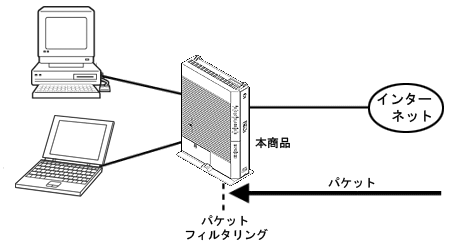

パケットフィルタリング
指定した条件の通信を遮断する機能です。
あらかじめ設定した条件にしたがって、パケットを選択的に通過させたり、通過を禁止したりできます。
不必要なパケットの送受信を制限できるので、セキュリティの高いLANが構築できます。
本商品の設定では、以下の項目が指定できます。
＜IPv4の場合＞
＜IPv6の場合＞
フィルタ種別
通信方向
プロトコル
TCPフラグ
接続インターフェース
送信元IPアドレス/マスク
宛先IPアドレス/マスク
送信元ポート
宛先ポート
ICMPタイプ
ICMPコード
フィルタ種別
通信方向
プロトコル
TCPフラグ
送信元IPv6プレフィックス/プレフィックス長
宛先IPv6プレフィックス/プレフィックス長
送信元ポート
宛先ポート
ICMPv6タイプ
ICMPv6コード

設定方法
■「Web設定」
「詳細設定」-
「IPv4パケットフィルタ設定」
で設定する
「詳細設定」-
「IPv6パケットフィルタ設定（IPoE）」
で設定する
「基本設定」- 「接続先設定（IPv6 PPPoE）」-
［接続先の情報］IPv6セッション
で設定する
＜ご注意＞
IPv6 PPPoEインタフェースのパケットフィルタ設定は、ご契約のプロバイダがIPv6 PPPoE方式によるインターネット接続サービスを提供している場合にのみご利用いただけます。
↑ページのトップへ